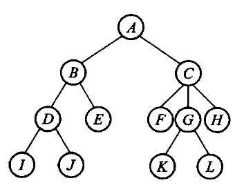
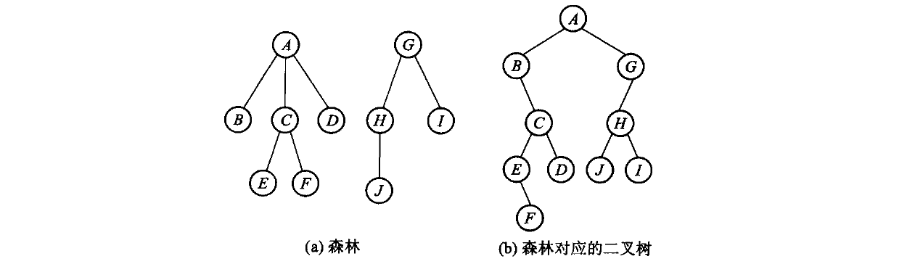
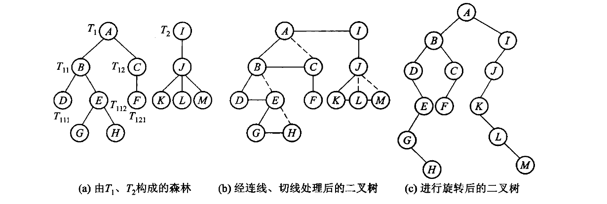
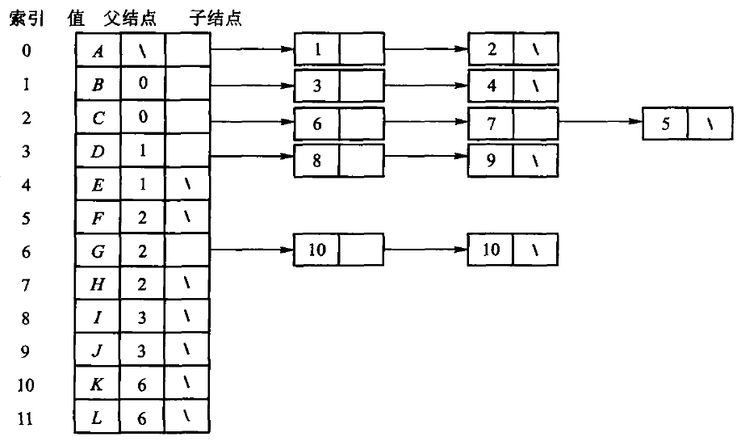
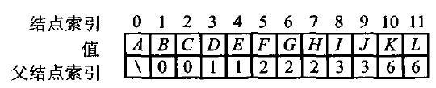
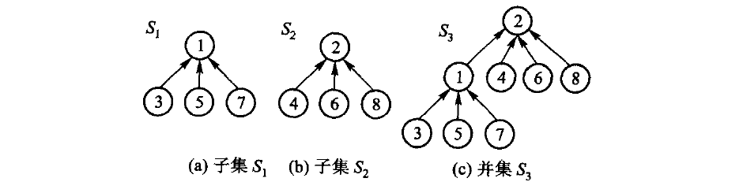
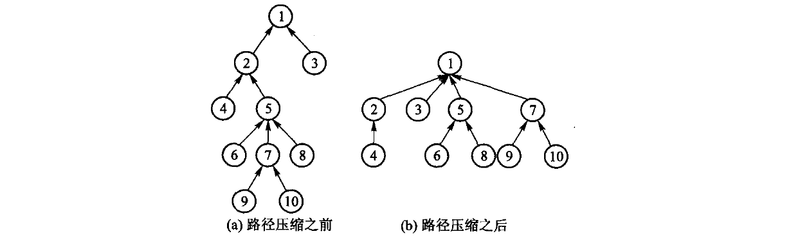
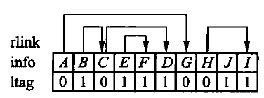

一般树：每个结点可以有任意多个孩子。
一条主线：同一棵树，存法不同，能高效做的运算就不同。

把一棵树的根去掉，剩下的就是森林——这个观察后面反复用到。

规则只有两条：
这就是「左子/右兄」表示法。

森林 → 二叉树：连兄弟、留长子、旋转 45 度。
二叉树 → 森林：反过来做。任何二叉树都能转回唯一的森林。
| 运算 | 干什么 | GeneralTree 上的名字 |
|---|---|---|
| 建根 | 用一个值建出根结点 | GeneralTree::create_root |
| 插入长子 | 在某结点下插入第一个孩子 | GeneralTree::insert_first |
| 插入兄弟 | 在某结点旁插入下一个兄弟 | GeneralTree::insert_next |
| 问父亲 | 取某结点的父结点 | GeneralTree::parent_of |
| 删子树 | 摘掉一棵子树并销毁 | GeneralTree::delete_subtree |
| 周游 | 先根 / 后根 / 层次 | preorder / postorder / breadth_first |
「插入长子」和「插入兄弟」这一对，就是「左子/右兄」在接口上的样子—— 一般树没有「第 k 个孩子」这种 O(1) 运算，孩子只能顺兄弟链走。
原书【代码6.1】【代码6.2】只给出声明。本书把这些运算直接写在 GeneralTree 上， 不再另设一个空的抽象基类。
| 周游 | 做法 | 对应二叉树的 |
|---|---|---|
| 先根 | 先访问根，再依次周游各棵子树 | 前序 |
| 后根 | 先依次周游各棵子树，再访问根 | 中序 |
| 广度优先 | 一层一层，用队列 | 层次 |
「按先根次序周游树」等于「对应二叉树的前序周游」—— 这是上一页那个转换的直接推论。
template <class Visitor>
static void pre(Node* node, Visitor& visitor) {
for (; node != nullptr; node = node->sibling) {
visitor(node->value);
pre(node->child, visitor);
}
}template <class Visitor>
static void post(Node* node, Visitor& visitor) {
for (; node != nullptr; node = node->sibling) {
post(node->child, visitor);
visitor(node->value);
}
}两个函数只差 visitor(node->value) 那一行的位置—— 和第 5 章的三种周游是同一个套路。
| 表示法 | 结点里存什么 | 找孩子 | 找父亲 |
|---|---|---|---|
| 子结点表 | 一张孩子链表 | 快 | 慢 |
| 指针数组 | 固定长的孩子指针数组 | 快 | 慢 |
| 静态左子/右兄 | 数组下标表示两条链 | 中 | 慢 |
| 动态左子/右兄 | 两根指针 | 中 | 慢 |
| 父指针 | 一根指向父亲的指针 | 慢 | 快 |
没有哪种都快——最后两行是本章要展开的两个。

每个结点挂一条孩子链表。找孩子很快。
但找父亲要扫遍全表——而且每个结点的孩子数不定， 数组要么浪费要么不够。
结点只留两根指针：第一个孩子、下一个兄弟。
Node* insert_first(Node* parent, const T& value) {
if (parent == nullptr) {
throw std::invalid_argument("parent must not be null");
}
Node* node = new Node(value);
node->sibling = parent->child;
node->parent = parent;
parent->child = node;
return node;
}Node* insert_next(Node* node, const T& value) {
if (node == nullptr) {
throw std::invalid_argument("node must not be null");
}
Node* next = new Node(value);
next->sibling = node->sibling;
next->parent = node->parent;
node->sibling = next;
return next;
}void delete_subtree(Node* node) {
if (node == nullptr) {
return;
}
Node** link = node->parent == nullptr ? &root_ : &node->parent->child;
while (*link != nullptr && *link != node) {
link = &(*link)->sibling;
}
if (*link != node) {
throw std::invalid_argument("node is not part of this tree");
}
*link = node->sibling;
node->sibling = nullptr;
destroy(node);
}
每个结点只存一根指向父亲的指针。
看着很废——但它恰好匹配一类问题：判断两个元素在不在同一个集合里。
关系 R 是等价关系，当且仅当满足：
元素 x 的等价类是 [x]R={y∈S:(x,y)∈R}。 所有等价类互不相交，合起来正好划分全集 S。
给定若干等价偶对，处理过程只有三步：
find 找到元素所在集合的代表根；union，把两个集合归并。
给一堆等价对 (A,B)、(C,K)、…，要能回答「x 和 y 同类吗」。
只用到「往上走」，所以父指针表示法正好。
每次都把 B 挂到 A 下面，n 次合并之后树高 n， find 退化成 O(n)。
原书给了两条改进，本书都实现了。
看两个集合的元素个数，令含元素少的树根指向含元素多的根。
bool unite(std::size_t left, std::size_t right) {
left = find(left);
right = find(right);
if (left == right) {
return false; // 已经同类：幂等的可预期失败（D-001 §3c）
}
// 重量权衡：小树挂到大树下。并列时把**值大的根**挂到值小的根下——
// 原书没有规定并列怎么办，这个口径取自课程第 6 章习题 8 的原话
// 「当两棵树规模同样大时，使结点值较大的根结点作为值较小的根结点的子结点」，
// 这样书里的实现能直接用来核对那道题的答案。
if (size_[left] < size_[right] || (size_[left] == size_[right] && left > right)) {
std::swap(left, right);
}
parent_[right] = left;
size_[left] += size_[right];
return true;
}
std::size_t find(std::size_t index) {
if (index >= parent_.size()) {
throw std::out_of_range("disjoint-set index");
}
if (parent_[index] != index) {
parent_[index] = find(parent_[index]); // 【算法6.9】路径压缩
}
return parent_[index];
}find 在返回根之前，把沿途每个结点的父指针都直接改成根。
两条改进合起来，m 次操作的摊还代价是 O(m α(n))—— α 是反 Ackermann 函数，实际中不超过 5。
树也可以压成一个线性序列存到文件里。关键是： 序列本身丢掉了结构，要靠附加信息把结构恢复出来。
| 表示法 | 每个结点附加什么 |
|---|---|
| 带右链的先根次序 | 一个 rlink 下标 + 一个 ltag |
| 带双标记的先根次序（历史编码） | ltag + rtag 两位信息；普通 bool 不保证各占 1 bit |
| 带度数的后根次序 | 这个结点有几个孩子 |
| 带双标记的层次次序 | ltag + rtag，但按层排 |
“带双标记”是历史编码概念：适合作为早期教材中的位级压缩案例，不是现代树库的主流接口。工程实现通常选择 LOUDS、平衡括号或其他 succinct tree 编码。
这是经典顺序编码，今天主要用于理解树的序列化；工程中的紧凑树通常会考虑 LOUDS 或平衡括号编码。

先根次序 A B C E F D G H J I
ltag 0 0 0 0 1 1 1 0 1 1 0 = 有孩子
rtag 0 1 0 1 1 1 0 0 1 1 0 = 有下一个兄弟光靠这三行就能把链恢复出来，靠的是先根次序的一条性质： 任何结点的子树都紧跟在它后面，子树排完才轮到它的下一个兄弟。
「谁是某个结点的右兄弟」要等它整棵子树扫完才知道——用栈记着：
扫每个结点:
rtag == 0 (还有下一个兄弟) -> 把它压栈
建一个新结点
ltag == 0 (有孩子) -> 新结点就是它的长子
ltag == 1 (没孩子, 子树到头) -> 弹一个出来, 新结点是那个的右兄弟完整实现是原书【算法6.10】，见 code/ch06/general_tree/modern.hpp。
二叉树的自然推广：每个结点最多 K 个孩子，而且孩子的位置有区分。
完全 K 叉树同样可以按层次编号进数组：
下标 i 的第 j 个孩子 K*i + j + 1 (j = 0 .. K-1)
下标 i 的父亲 (i - 1) / K第 11 章的 B 树、B+ 树就是 K 叉树的一种。
左孩子右兄弟把“任意多个孩子”编码成两个指针；并查集则把树的父指针用于维护等价类，而不是表达遍历顺序。
先执行 union(1,2)、union(3,4)、union(2,3)，画出父指针变化；再执行 find(4)，比较路径压缩前后的链长。
先得到 {1,2} 和 {3,4}，再把两个代表合并。按大小合并时小树根挂到大树根；find(4) 返回同一代表并压缩沿途路径。路径压缩只改变父指针，不改变集合划分。
一般树结点 A 的孩子为 B、C、D：左指针 A→B，B 的右指针→C，C 的右指针→D；D 的右指针再接 A 的下一个兄弟。
右指针表示兄弟，不是第二个孩子。若把它当孩子，先根遍历会重复或漏掉整棵子树。
课堂练习：把根 R 的孩子 X、Y 和 X 的孩子 Z 写成二叉链接。答案：R.left=X，X.right=Y，X.left=Z。
左孩子右兄、父指针、双标记和并查集都在观察链接布局与结构不变量；本章没有把它们包装成 Python 容器，以免隐藏表示法本身。
python3 tools/check_code.py code/ch06/general_tree故意改坏一处，看哪条断言变红：
insert_next 里把 next->parent = node->parent 改成 = nodedelete_subtree 里先销毁再脱链unite 改成按秩合并（比树高而不是比元素个数）第三条会让「规模 3 的集合与规模 2 的集合合并、根应是前者」那条断言变红—— 两种规则长出的树形状不同。
放映快捷键
→ / 空格下一页 ←上一页 Home / End首尾
N演讲者备注 O缩略图总览 F全屏 D深色
?这张帮助 Esc关闭
导出 PDF：浏览器打印（Ctrl/Cmd+P），每页一张幻灯片。